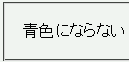
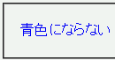

擬似要素、擬似クラス、@キーワード、!important は語句の後部が欠落した状態でも認識する。
<style type="text/css">
@m screen {
p.m {
color: blue;
}
}
</style>
<p class="m">青色にならない</p>
青色にならない
「@m」は不正な@キーワードであるため、@キーワードのブロック全体が無視されます。この結果、セレクタ「p.m」に対するスタイル指定は反映されないはずです。
Netscape7.1標準モード
WinIE6.0標準モード
例えば擬似要素の場合、 :f, :fi, :fir ... :first-lette は :first-letter であると認識します。 :first-li, :first-lin は :first-line であると認識します。他も同様で、例えば :l は :link と、 :ac は :active と、 @i は @import と認識します。
WinIE6.0の標準モードと互換モードで不具合の発生を確認しました。